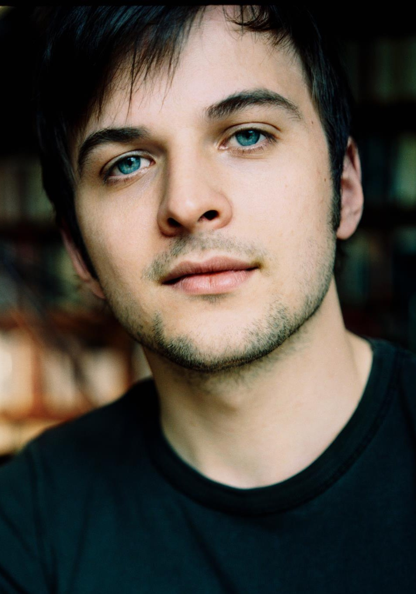

喜欢的音乐

四季（春）音乐播放控制器
试听
▶
"四季的标题并非后人附会，而是出自维瓦尔第本人之手。他甚至还为每首曲子写了一首解释性的14 行诗，并将每一句诗印在相应的乐段谱上。譬如第一首，E 大调的《春》，首乐章开头的诗句是"春光重返大地"，而乐曲昂扬的旋律，配着兴高采烈的顿音节奏，也真是一派欣欣向荣！又譬如第二首《夏》，开头的几句维瓦尔第解释为"夏日炎炎，人畜萎靡不振。"你不妨对照听听，是不是这情形？
四首协奏曲里，最迷人的乐章，恐怕要算《冬》的"广板"了。按照作者诗句的解释，乐队中的小提琴拨弦意味着在房子外面把许多人淋成落汤鸡的浙沥的雨点，而独奏小提琴的亲切、流畅的旋律，则表达了屋里那些依傍火炉而坐的人们感到幸运而心满意足。容我老实挖苦一句：这段曲子的纯净之美，远不是维瓦尔第这番蹩脚、俗气的注解所能比拟。
马里纳版的《四季》丰润，秀美，版本最佳。而阿卡多的那张（Philips 422 065-2），分别用四把斯特拉迪瓦里名琴来拉"四季"，仿佛是存心让咱们的耳朵经受考验。 "
显示全部 ∨
评分：★★★★★类别：Classical
花之圆舞曲音乐播放控制器试听 ▶
"《胡桃夹子》是两幕三场梦幻芭蕾舞剧，由俄罗斯著名作曲家柴可夫斯基作于1892年。剧本是彼季帕根据恩斯特·霍夫曼的童话《胡桃夹子和鼠王》及大仲马的改编本写成的。作者从舞剧中选了六首曲子作为《胡桃夹子组曲》，同年3月7日在一次交响乐演奏会上首演，获得了巨大的成功。同年12月6日舞剧在彼得堡首演。 这部作品是柴科夫斯基三部芭蕾舞剧代表作品之一，也是世界舞蹈舞台上久演不衰的舞剧精品之一。花之圆舞曲是其中第二幕第三场第13曲"
显示全部 ∨
评分：★★★★★类别：Classical

Ambre音乐播放控制器试听 ▶
德国音乐人尼尔斯·弗拉姆的作品Ambre（《琥珀》）。黑白琴键的起伏看似平静，就像他的作品，看似安静的外表下包含了各种情感。作品的细节中被有意加入了很多微小的、象征性的表现手法，这种重复而略带抽象的声音，听起来耐人寻味。
"The three instrumentals, which make up his debut release 'Wintermusik' are piano led pieces, coloured with occasional celeste and reed organ parts. The record's equal measures of sorrowful refrains and uplifting passages, combined with a real intimacy that makes for an album you'll want to return to again and again. The songs were originally intended as a Christmas present for friends and family and first released on sonic pieces, hence its winter release via London-based cinematic music label Erased Tapes.
As the curator of the Swedish boutique label Kning Disk's Piano Series, Peter Broderick invited Nils to record a new album of piano improvisations – the result is 'The Bells', which will now also be released on Erased Tapes in the UK, Ireland and North America. The record includes pieces of improvised piano music, which were recorded in the wonderful Grunewald church in Berlin. "
显示全部 ∨
评分：★★★★★类别：Piano
听海音乐播放控制器试听 ▶
“《听海》收录于1997年6月张惠妹发行的第二张个人全新专辑《BAD BOY》，由著名音乐人林秋离、涂惠元继续为阿妹量身打造又一抒情力作。这首歌排在曲目的第五首，发行最初并非是作为主打歌，但因为受到歌迷出乎意料的热烈欢迎，迅速成为流行经典。”
显示全部 ∨
评分：★★★★★类别：Pop
Scarborough Fair音乐播放控制器试听 ▶
"Scarborough Fair（斯卡堡集市，也译作"斯卡波罗集市"），是一首旋律优美的经典英文歌曲，曾作为第40届奥斯卡获奖影片《毕业生》（The Graduate）的插曲，曲调凄美婉转，给人以心灵深处的触动。《Scarborough Fair》原是一首古老的英国民歌，其起源可一直追溯到中世纪，原唱歌手为保罗·西蒙（Paul Simon）和加芬克尔（Art Garfunkel）。莎拉·布莱曼（Sarah Brightman）翻唱过该歌曲，收录于2000年专辑《La Luna》。此外来自英伦岛屿的 Gregorian格里高利合唱团（又称"教皇合唱团"）也曾翻唱过该歌曲。"
显示全部 ∨
评分：★★★★★类别：Light
梁祝（小提琴协奏曲）音乐播放控制器试听 ▶
"《梁祝》小提琴协奏曲是陈钢与何占豪就读于上海音乐学院时的作品，作于1958年冬，翌年 5月首演于上海获得好评，首演由俞丽拿担任小提琴独奏。题材是家喻户晓的民间故事，以越剧中的曲调为素材，综合采用交响乐与我国民间戏曲音乐表现手法，依照剧情发展精心构思布局，采用奏鸣曲式结构，单乐章，有小标题。以"草桥结拜"、"英台抗婚"、"坟前化蝶"为主要内容。由鸟语花香、草桥结拜、同窗三载、十八相送、长亭惜别、英台抗婚、哭灵控诉、坟前化蝶构成的曲式结构。
全曲大概二十六分钟，首先五分钟叙述梁祝爱情主题，然后是快乐的学校生活，接着十八相送。从十一分钟开始进入第二段，祝英台回家抗婚不成，楼台会，最后哭灵。第二段和第一段长度差不多，大约十一分钟。最后一段则是化蝶，是主题再现。"
显示全部 ∨
评分：★★★★★类别：Classical